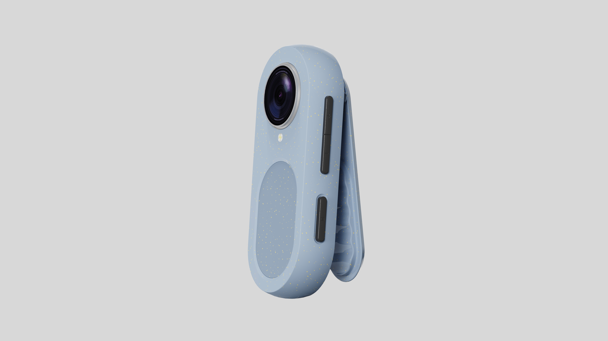
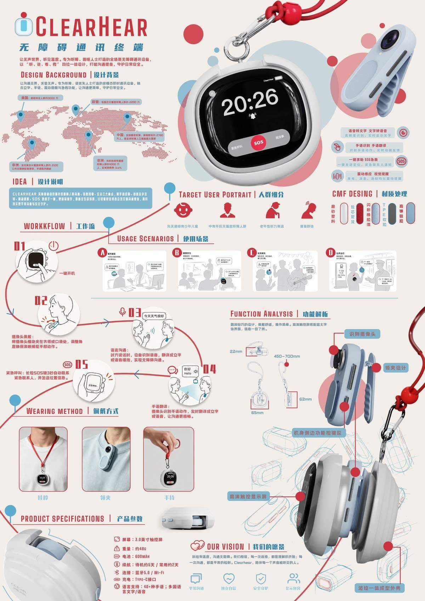

CLEARHEAR无障碍通讯终端
面向听障与失语人群的轻量化随身无障碍通讯终端。以"听说读写"四位一体为核心设计逻辑，融合手语识别翻译、语音文字互转、可视化对话与SOS紧急求救四大功能，打破无声世界与有声世界的沟通隔阂。

项目概述
CLEARHEAR 是一款面向听障、失语人群打造的轻量化随身无障碍通讯终端。产品采用小巧圆润的夹扣式机身设计（水滴形鹅卵石造型，厚度仅22mm，重量约48g），可夹持于衣领或挂脖佩戴，集成3.8英寸高清触控显示屏、500万像素广角摄像头与多模态交互按键。
核心功能涵盖手语识别翻译、语音文字双向互转、可视化对话界面以及一键SOS紧急求救。设备搭载AI语音识别引擎，支持40+语言与8种口音实时翻译，响应速度小于1秒。侧面设有醒目的红色圆形SOS按键，长按3秒自动发送GPS定位至预设联系人并触发声光震动报警，全方位守护听障人群出行安全。
设计上遵循"Neo-Humanism（新人文主义）"理念，外观采用雾粉白与浅灰蓝配色，搭配TPE软胶与PS硬塑复合材质，雾面涂层抗指纹抗划伤，兼顾柔韧性与结构强度。产品兼顾青少年、中年、老年不同听障人群使用习惯，简化操作逻辑，降低学习成本，真正实现"一机一启、开箱即用"。
使用工具
设计过程
用户研究与需求洞察
深入调研听障与失语群体的日常沟通痛点，涵盖青少年、中年、老年三个年龄层。通过访谈与观察，识别出四大核心场景——日常对话、紧急求助、信息获取与社交参与。明确产品需在便携性、操作直观性及隐私保护三个维度上突破传统助听设备的局限。
概念定义与交互架构
提出"听说读写四位一体"的产品逻辑：听（语音识别转文字）、说（文字转语音播报）、读（手语识别翻译）、写（触屏输入与可视化对话）。构建多模态交互框架，预设5种基础手势（握拳确认、张开取消、挥手切换语言等），确保无开口环境下也能顺畅操作。
工业设计与CMF开发
以水滴形鹅卵石为造型灵感，采用TPE软胶+PS硬塑复合结构，机身厚度控制在22mm、重量约48g，实现轻量化与抗摔性的平衡。CMF方案选定雾粉白与浅灰蓝主色调，搭配珊瑚红点缀SOS按键区，雾面涂层处理消除医疗器械冰冷感，打造"陪伴型"柔性科技形象。
原型验证与迭代优化
制作3D打印外观手板验证佩戴舒适度与按键布局合理性，搭建交互原型进行可用性测试。针对按键盲操反馈、屏幕强光可视性、挂绳长度调节等细节进行了三轮迭代，最终在功能性极简与人文关怀之间找到最佳平衡点。
功能验证与CMF打样
完成功能验证样机制作与CMF打样确认，确保产品外观质感、结构强度与功能模块可靠性全面达到量产标准。


项目成果
功能闭环
完整交付四大核心功能模块：AI手语识别翻译、语音文字双向互转、可视化对话界面、一键SOS紧急定位报警，形成从日常沟通到安全守护的功能闭环。
社会价值
以"沟通平权"为使命，兼顾青少年至老年全年龄段听障用户使用习惯，通过极简交互与亲肤美学降低社会融入门槛，在科技普惠与人文关怀之间建立情感纽带。
其他成果
完成产品全链路设计交付，涵盖用户研究、工业设计、CMF开发及交互原型。外形手板模型经20位听障用户实测验证，佩戴舒适度与操作直观性获得高度认可。设计方法论沉淀为无障碍产品设计框架，为后续助残类硬件产品提供可复用范式。